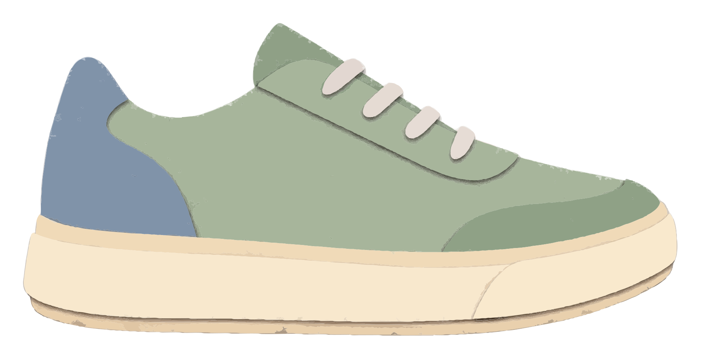
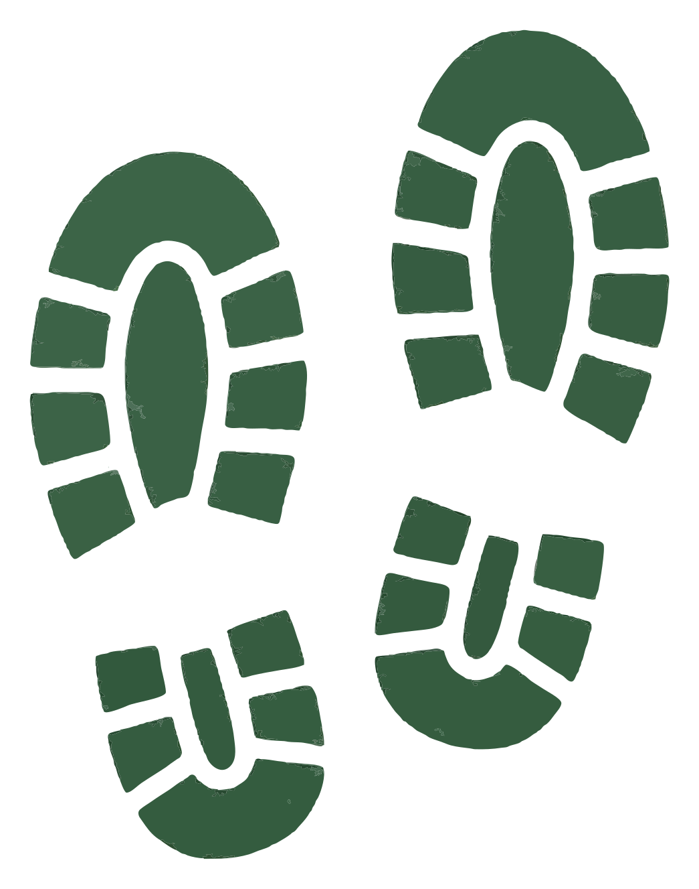
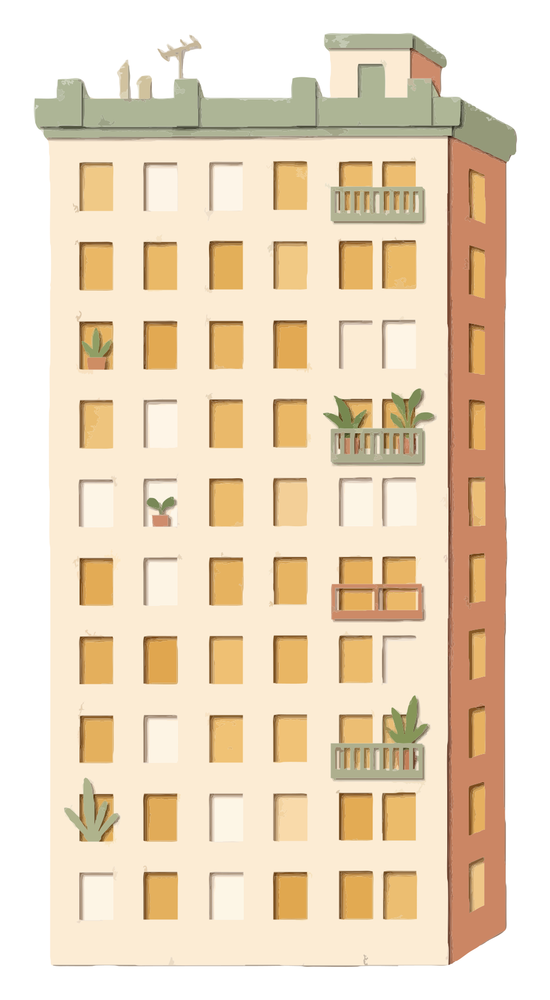
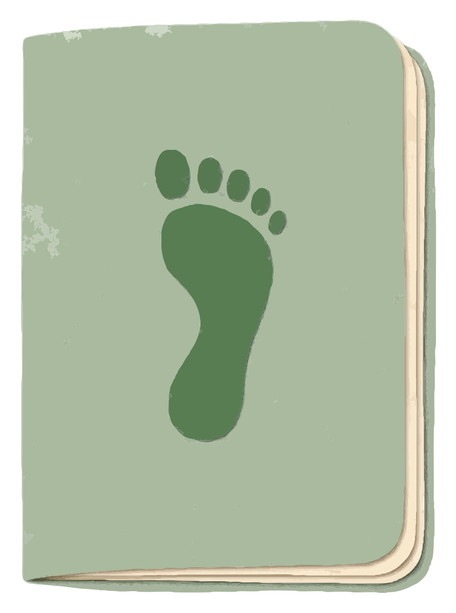

A LITTLE MOVEMENT. A WHOLE YEAR.
2025.
Your year.
Quite a story.
Thong, look at all
those little days.
TIME YOU MADE FOR YOURSELF
Little windows.
A lot of time.
in motion
That’s quite a watchlist.
Enough time for 142 half-hour episodes.
Your series had a little more movement.
HERE’S HOW YOU GOT THERE
You mixed
things up.

Walking 84 walks
Strength 36 sessions

Running 14 runs
Cycling 8 rides
More than one way
to have a good day.
142 activities. Four ways to move.
ONE FOOT. THEN THE OTHER.
A little
further.
ON WHEELS.
Recorded activities only.
Meanwhile, your daily step count reached 1.24 million.
SOME PLACES KEEP CALLING
Same loop.
New day.
LOOP ↗34RETURN VISITS
Your familiar patch of outside.
34 of your 84 walks brought you here.
A different sky almost every time.
THE LITTLE UPS ADDED UP
You went
up in the world.

128 trips up
a 30-metre building.
Mercifully, not all at once.
Cumulative ascent, not your highest altitude.
Biggest single climb: 412 m.
ENERGY, PUT INTO MOTION
That took
some energy.
● Walking● Strength● Running● Cycling
Walks, lifts, rides.
All part of the same story.
Activity energy estimate · Excludes resting energy.
Across your recorded walks, workouts, runs and rides.
ONE REP AT A TIME
Heavier than
you think.

No parking space required.
36 strength sessions. A whole lot of reps.
Approx. 6,000 kg per bus · Volume = weight × reps.YOU FOUND YOUR OWN RHYTHM
An evening
kind of person.
of your activities
started in the evening.
September was your busiest chapter: 18 activities.
Your pace. Your time of day.
ONE TO KEEP
The long
way home.
“Riverside route.
Lost track of time.”

WALK ↗
Some days stay with you.
This was one of yours.
A YEAR OF SHOWING UP
All those days.
All yours.

Built one little day at a time.
ILLUSTRATIVE DEMO YEAR